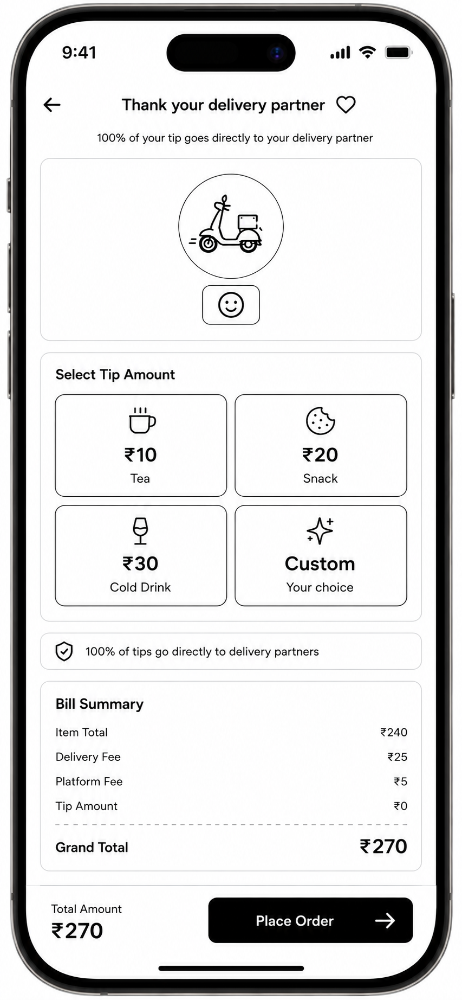

A full product requirement document for a checkout-and-post-delivery tipping feature on blinzedu's hyperlocal delivery app — built to lift delivery partner take-home pay while giving customers a transparent, one-tap way to reward good service.
Delivery partners form the foundational backbone of blinzedu's hyperlocal delivery network, operating in high-pressure environments to ensure orders reach customers within minutes. Given the grueling nature of outdoor logistics, unpredictable weather, and fluctuating traffic conditions, extra earnings significantly impact their daily livelihood and financial security.
A seamless tipping feature is a structural mechanism to augment partner incomes while letting appreciative customers reward exceptional service directly. This document covers the product strategy, competitor analysis, feature requirements, wireframes, success metrics, and execution roadmap to launch the feature by end of January.
| Feature | Dunzo | Instamart | Zepto | Blinkit |
|---|---|---|---|---|
| Minimum tip | ₹10 | ₹10 | ₹10 | ₹5 |
| Maximum tip | ₹100 | ₹1000 | ₹1000 | ₹500 |
| Icons for purchases | No | Yes (tea, snacks) | No | No |
| Post-delivery tipping | No | Yes | Yes | Yes |
| 100% transparency badge | Yes (text only) | Yes (icon + text) | Yes (bold banner) | Yes (text only) |
| Custom amount input | Yes | Yes | Yes | No (fixed only) |
Recommendation: implement checkout-stage tipping supplemented by post-delivery pop-ups, with configured amounts mapped to tangible purchase icons (₹10 for tea, ₹20 for a snack). This maximizes conversion by connecting real-world value to the tip amount, while an explicit transparency badge guaranteeing 100% pass-through builds trust and adoption.
Execution spans three distinct modules: the customer-facing app, the delivery-partner-facing app, and the internal ops/finance admin panel.
Choose a tip amount on the checkout page, see icons of common items the amount buys, and get reassurance that tips go directly to the partner.
Amounts appear in ascending order and are backend-configurable, along with their icons. UI works across the top 25 Android and top 5 iOS devices. The tip section sits between "coupon code" and "payment details," headed "Thank your partner with a tip," with three horizontal tap targets (₹10 / ₹20 / ₹30) and a caption confirming 100% goes to the partner.
Customers who had an exceptional experience can add a custom tip outside the preset options.
Tapping "custom" converts the section into a numeric input with a "₹" prefix and opens the native numeric keypad automatically. A guardrail rejects values above ₹500 or 100% of the order total (whichever is lower), showing inline error text: "Tip amount cannot exceed order total or ₹500."
Customers who skipped tipping at checkout but rate the delivery 4 or 5 stars get a contextual post-delivery modal.
The modal fires within 5 seconds of a 4- or 5-star rating, offers the same ₹10 / ₹20 / ₹30 presets, and triggers payment automatically via saved UPI or card tokens.
Partners get positive reinforcement immediately after a customer tips them, motivating continued quality service.
Anti-cherry-picking guardrail: the tip value stays hidden until order status becomes "Delivered," preventing partners from rejecting low- or zero-tip orders. On delivery, a push notification fires: "Great job! You earned a tip of ₹XX on your last order."
Partners can check exact daily, weekly, and monthly tip breakdowns for transparent accounting.
A distinct "Customer Tips" line item appears under the Earnings Dashboard, calculated separately from base payouts, with a 0% platform fee deduction shown explicitly.
Ops teams can adjust preset values for seasonal shifts or hyper-local inflation.
A secure web dashboard lets admins change fixed values (e.g. ₹10 → ₹15) and map localized icons (e.g. a festival sweet) via a JSON-based CMS, with no app store update required.
Automated payouts ensure compliance and prevent manual ledger backlogs.
All tip transactions escrow into a separate account node. At 23:59:59 daily, the settlement pipeline aggregates each partner's tips and queues them for direct bank transfer via automated IMPS/UPI clearing rails.

Exact hierarchical placement of the tipping row, the dynamic transparency card, and the native mobile keyboard invocation layer — mapped for a production handoff.
Fixed presets (₹10 Tea, ₹20 Snack, ₹30 Cold Drink) sit alongside a "Custom" option, above a persistent "100% of tips go directly to delivery partners" trust badge and the itemized bill summary.
Interact with the high-fidelity Figma prototype ↗| Scenario | Expected system behavior |
|---|---|
| Order cancelled post-payment | Tip is fully refunded to the customer's original payment source along with the order value. |
| Order cancelled mid-transit | Tip is still paid to the partner (who already spent fuel/time); the customer is charged the tip as a cancellation-fee penalty. |
| Partner reassignment | If Partner A unassigns (e.g. vehicle breakdown) and Partner B completes the delivery, the escrow engine routes 100% of the tip to Partner B. |
| Partial order refund | If items are missing and a partial refund is issued, the tip remains untouched and fully committed to the partner. |
| Payment gateway timeout | If the tip micro-transaction times out on the backend, the order still processes normally; the tip is suppressed, the grand total adjusts down, and a non-blocking notice reads: "Tip processing failed; order placed successfully." |
| Metric | Definition | Target |
|---|---|---|
| Tipping adoption — orders | % of fulfilled orders containing a customer tip | 5.0% of monthly orders |
| Tipping adoption — users | % of unique MAUs who tip at least once a month | 10.0% of MAUs |
| Earnings impact — partners | % increase in average daily take-home earnings | 2.0% average income growth |
| Average tip value | Total tip revenue ÷ total tipped orders | ₹22.00 per tipped order |
| Guardrail — checkout abandonment | % of users dropping out of checkout after the tipping block appears | 0.0% variance vs. baseline |
| Priority | Feature component | Impact | Effort | Timeline |
|---|---|---|---|---|
| P0 | Checkout fixed tipping options | High — drives immediate adoption at the core conversion funnel | Medium | Week 1 |
| P0 | Partner payout integration | Critical — ensures legal, transparent, swift disbursement | Small | Week 1 |
| P1 | Custom tip amount input | Medium — captures high-value outlier tips | Small | Week 2 |
| P1 | Post-delivery tipping prompt | Medium — recovers missed tip conversions post-fulfillment | Medium | Week 3 |
| P1 | Tipping history dashboard | Low — improves long-term transparency | Medium | Week 4 |